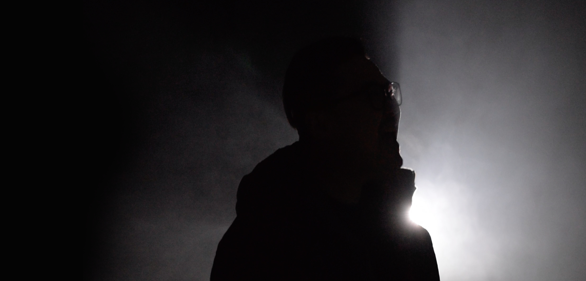
over 25 years designing products & experiences:
retail / sport / enterprise platforms
from early web
to e-commerce
to enterprise systems
at global scale
Product Readiness & Activation Platform
Powering Nike’s global commerce ecosystem by enabling products to move seamlessly from planning to market across Digital, Retail, and Partner channels. I led the design of a scalable platform that simplified complex operational workflows for global teams, delivering 30+ hours/week in efficiency gains, adoption across 8 markets, and opportunities to reduce manual effort and inventory risk.
View full case study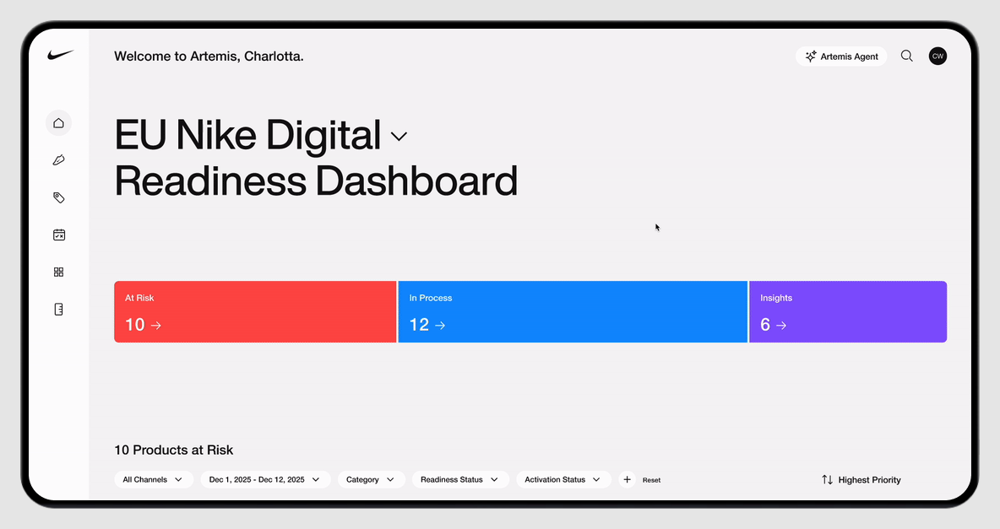
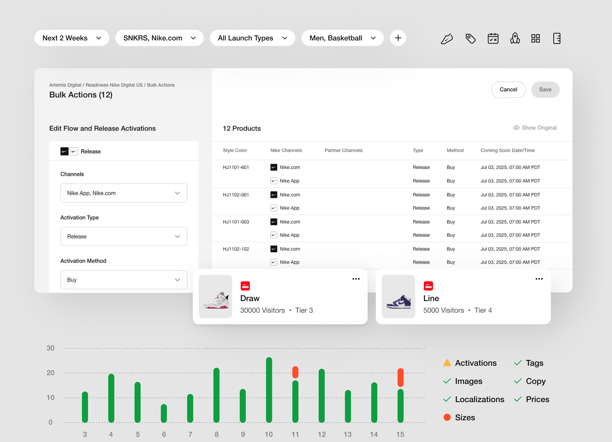
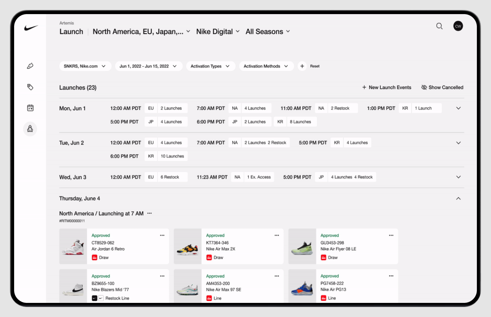
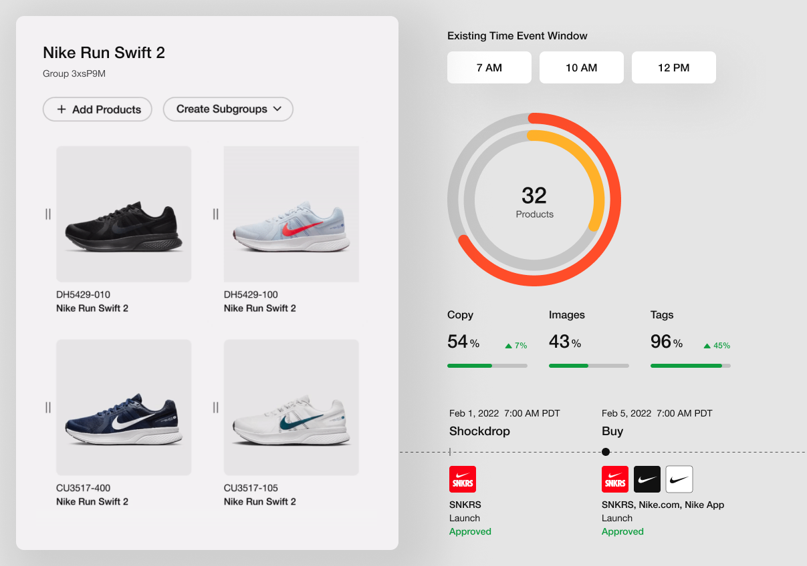
Mobile Status & Communication Control
Led redesign of Ruby’s mobile app to simplify how small business owners manage availability and calls. Introduced “Hold My Calls,” replacing multi-step status forms with a single-tap action designed for real-world, on-the-go use. Within 6 months of launch, 64% of all status updates were created through the new flow, increasing adoption and reducing friction in core communication tasks.
View full case study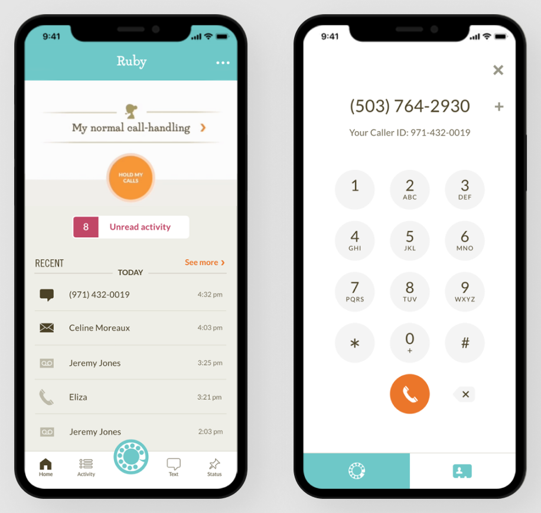
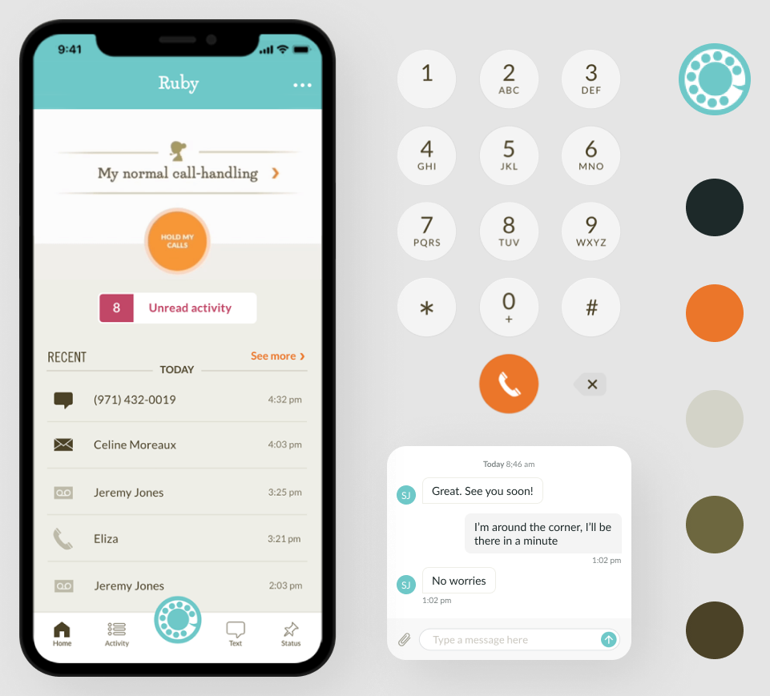
Receptionists Operating System
Redesigning Ruby’s core operations platform to support the company’s next stage of growth and improve how receptionists handle live customer calls. I led the end-to-end design, turning fragmented workflows into a clear, scalable system using user research, interaction design, motion, and a unified design system to improve speed, accuracy, and usability.
View full case study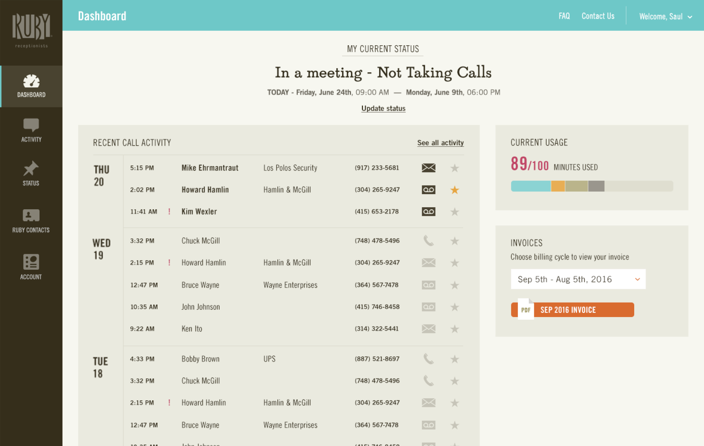
Digital Commerce Experience
Transforming SOREL’s digital shopping experience through responsive design, creating a cohesive system that unified brand storytelling, product discovery, and commerce. I led the design, defining the interaction patterns, visual language, and reusable UI framework that scaled across 50+ countries.
View full case study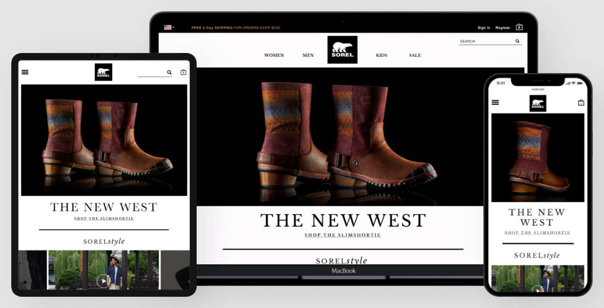
Brand Storytelling Platform
Expanding SOREL’s digital presence beyond transactional shopping through editorial-driven experiences. I designed a storytelling framework that connected cultural moments, brand expression, and product discovery to create deeper customer engagement.
View full case study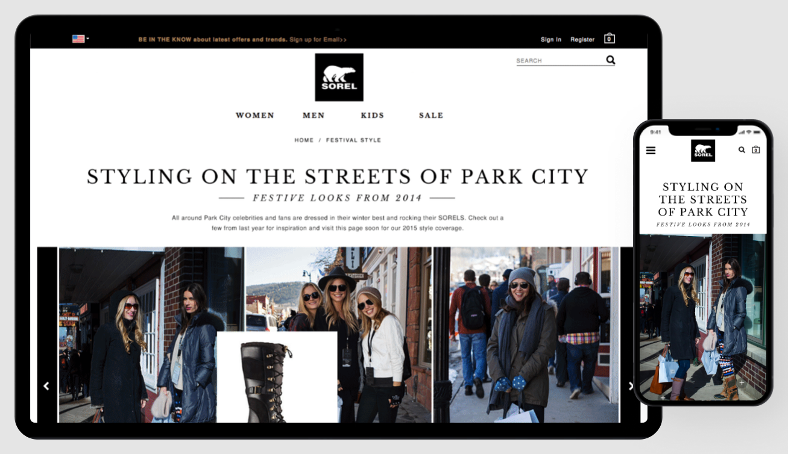
Mobile Shopping Experience
Modernizing Hanna Andersson’s digital shopping experience as mobile usage rapidly accelerated. I led the design, establishing a scalable responsive framework that unified the brand experience, improved product discovery, and simplified the customer journey across every viewport.
View full case study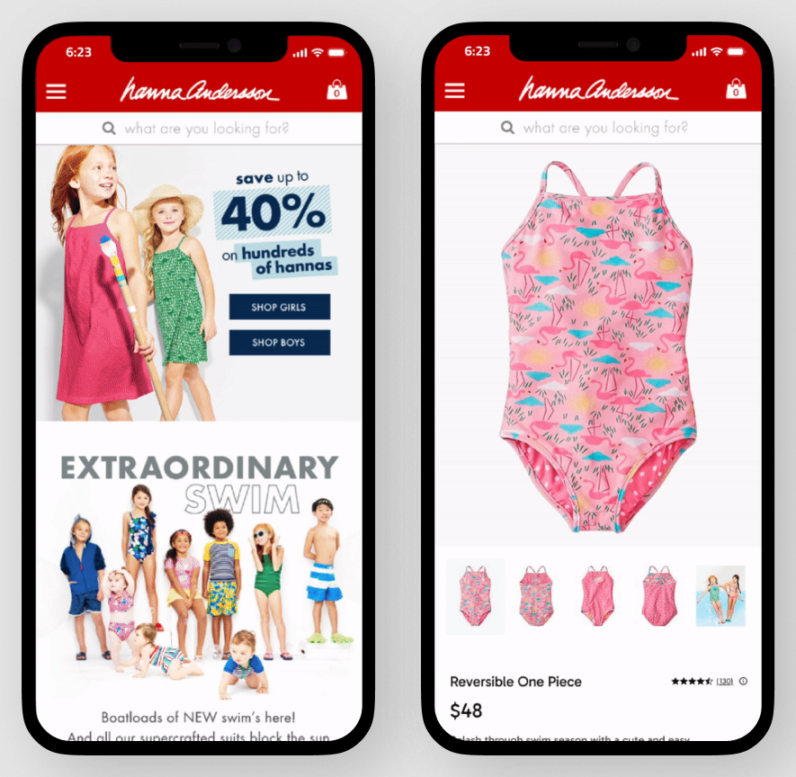
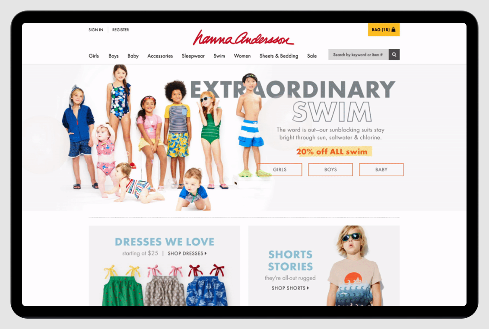